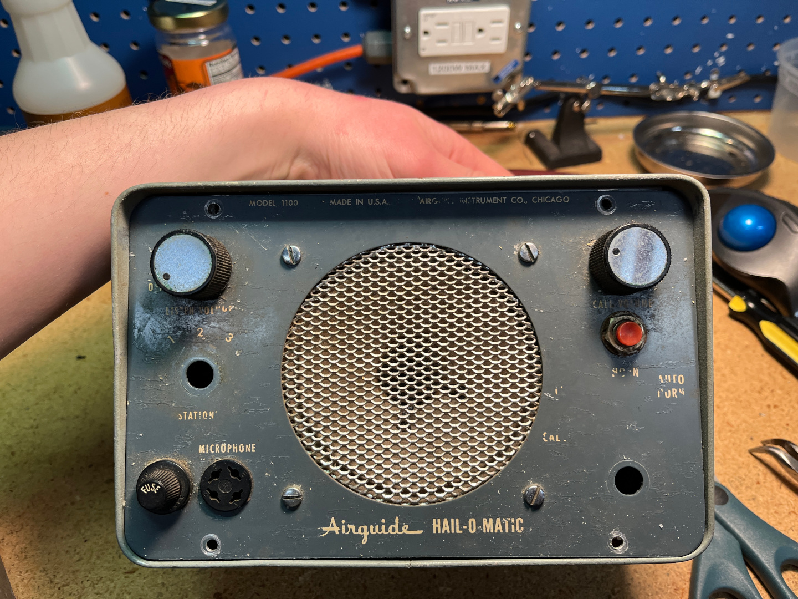

I went to Hamfest last weekend, where i found lots of cool vintage equipment. most of which i couldn't afford. However there were lots of bins that were labeled "6 for $1" or something similar. In one of those bins was sitting this: an Airguide Hail-O-Matic, from probably somewhere around the 60s. Now, doing some light research, I could only find one other mention online of the Airguide Hail-O-Matic, and it's on an auction site. I also found this page, which goes into more depth about the history of Airguide.
Anyways, this one was in kinda rough shape. It was missing two dials, and the screws that held the front panel to the rest of the body.
